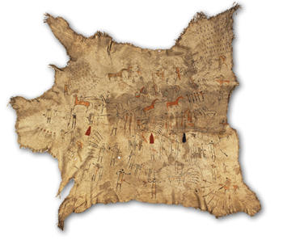

A
Native American War Record Robe at the British Museum
on long term loan to The British Museum
This magnificent, pre-Reservation war record robe, made and worn by a Northern Plains leader, c.1825 - 1850, will shortly go on display at the British Museum. Although without any early provenance the story of the painted robe's survival is beguiling. In 1959 a young girl and her mother attended a Scottish sale, at Portalloch House. Hanging in the old kitchen was this extrordinary garment: the girl, aged 16, asked her mother to bid for and buy the robe. Forty years later in London, the now-grown owner took the robe from under her bed, photographed it and sent the images to the museum to establish whether or not the robe was significant. In September 2000, the owner most generously placed the robe on anonymous long-term loan to the British Museum. It is scheduled to go on display in the Museum's Chase Manhattan Gallery of North America during the summer of 2001.
Painted war records
represent activities of warriors such as counting coup (capturing trophies),
horse raiding, fighting and taking scalps. As worn items robes ensured
public recognition for the deeds of the wearer: they would have been worn
horizontally so that the stories could be seen. This example is a summer
robe, probably from a buffalo cow, with fringed edges and designs painted
on the inside. The paint was applied with ‘brushes' or sticks made from
the porous interior of elk antlers. The robe is very densely painted:
the scenes in the centre are particularly closely placed and in total
there may be twenty exploits recorded in great detail. Most of the scenes
seem to depict climactic moments when the warrior is outfacing and outfighting
his enemy. At the bottom right, for instance, he is shown mounted, facing
muskets and holding a lance. His movement forward into the line of fire
is represented with four hoofprints. Much of the fine reading of the robe
will depend on the understanding of line, colour, the massing of scenes
and spacial placement of figures.

A native American War Plains Robe, probably made of Buffalo hide, c.1825
- 1850